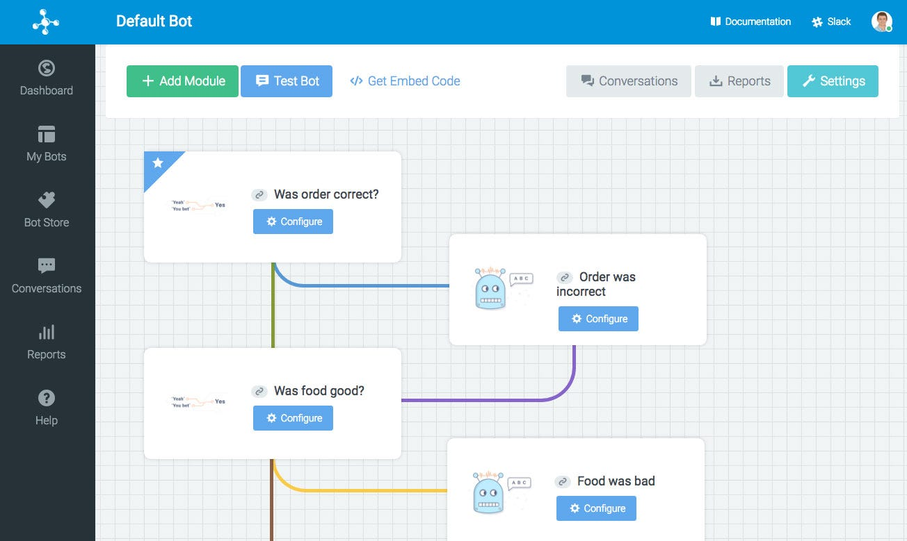

Bots builders: drag&drop, NLP or scripting?

Hi Eva,
About ChatFuel, is an example of what I call GUI-RAD #botdev tool. It seems to me like 90's graphical tools to make websites without coding. In true, nowadays, best websites are hand-crafted by front developers with (deep) knowledge of HTML5/CSS3 languages, isn’t it?
So ChatFuel-like tools are maybe perfect to build very simple “static” chatbots, like static websites instead of complex dynamic web apps, if you allow the comparison.
ChatFuel is free at the moment but probably will become with a fremium buisiness model, maybe.
BTW, personally, I’m not too much for chatbots As A Service (CAAS <-> SAAS) hosted in a cloud by a third party central cloud provider; last but not least there are behind, important data ( = conversations) privacy issues (let’s think about a commerce, banking, healthcare chatbots app).
About WIT.ai and similar NLP-intents extractors (as WIT.ai, API.ai, IBM Watson Conversation); here the problem is that these platform solve (very well sometime) the entities and actions from user intents, that’s perfect, but this is just a “minor” part of the chatbot build: the biggest part of develop, immo, is the conversational (work)flow, that i call the (conversational context) state management. As far as I see, all these tools are pretty stateless, forwarding the problem of statefullness to the application side (made by a developer that code the workflow and data management in a standard programming language, let say nodeJS or similar).
Personally I’m fan of scripting languages as Bruce Wilcox’s open-source: ChatScript, see my article:
What is great with scripting language (for bot dev) is that the authoring develop is a “script” in a “simple” language for novelists, screeplayers, exactly in the way you pointed out in your previous article:
They are the story tellers, people who can convey a meaning with fewer words, the right words.
(source: https://chatbotsmagazine.com/bots-are-just-a-facade-here-is-the-real-problem-e69f80116d7c#.c5g3fbnud)
See also:
Do you experienced ChatScript or similar?
What do you think about?
regards
giorgio